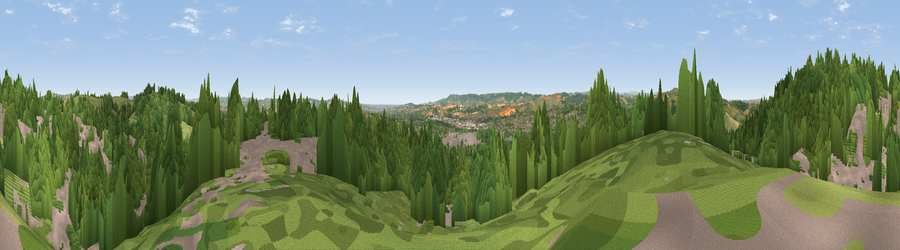

Viewpoint near Exeter
#13655 in England · top 21% of its area beats it · near Exeter · path 176 mWhere it is
The exact computed spot (SX 92525 94675). Click the marker for map links.
Public access: the nearest public right of way is about 176 m away — the final stretch may cross private land. Computed from Natural England's CRoW access layer and OpenStreetMap rights of way — not the legal definitive map. Always verify locally.
The view, rendered

A 360° render of this exact spot computed from the terrain model, tree cover and land cover — summer colours, afternoon light, calibrated against photographs of famous viewpoints. Real trees, hedges and buildings will differ in detail.
The panorama
Grey silhouette: terrain skyline in each direction (720 bearings, Earth curvature and refraction included). Dashed green: skyline with trees (+15 m) and buildings (+8 m) as obstacles. Blue strip: how far the ground is visible on each bearing.
Where the view opens
Wedge length = distance to the farthest visible ground on that bearing (vegetation-aware). Rings at 10, 25 and 50 km.
What fills the view
54% woodland · 25% built-up · 18% grassland · 3% cropland
Angular shares of the visible panorama (visual magnitude), not map area. Landscape diversity 0.48 (0–1 Shannon).
Key numbers
More beautiful places nearby
The staircase of upgrades: each row has a higher view potential than everything closer. Driving times are estimates from straight-line distance, calibrated against real road routing — check an actual route before setting out.
| Place | Direction | Drive | Score |
|---|---|---|---|
| Viewpoint near Cowley | NNW · 1 km | ~2 min | 69.8 |
| Viewpoint near Whitestone | W · 5 km | ~11 min | 73.9 |
| Viewpoint near Whitestone | W · 6 km | ~13 min | 79.8 |
| Viewpoint near Kenn | S · 11 km | ~21 min | 80.0 |
| Viewpoint near Kenton | S · 13 km | ~24 min | 80.7 |
| Viewpoint near Kenton | S · 14 km | ~25 min | 82.9 |
| Viewpoint near Holcombe | S · 20 km | ~33 min | 83.3 |
| High Peak | ESE · 20 km | ~34 min | 85.3 |
50.74171, -3.52456 · source: screening · position refined by local search. Computed location — check access rights before visiting.